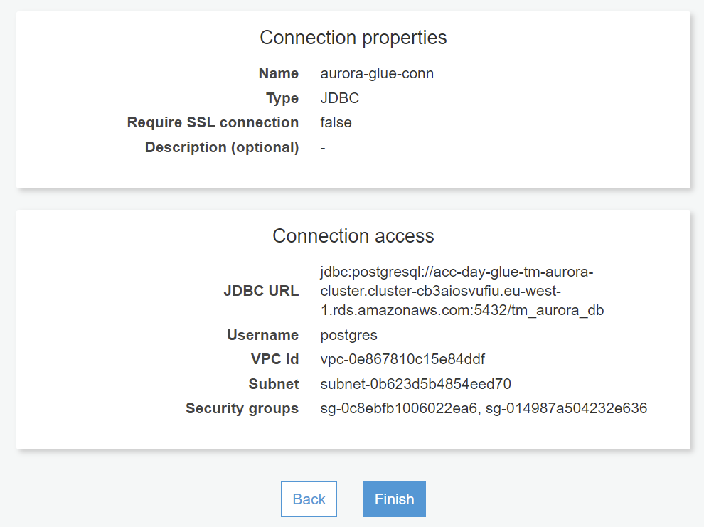

Advanced lessons with AWS Glue
Before beginning these lessons, please ensure that all AWS Glue intro lessons has been completed, or that you have a solid understanding of AWS Glue at this point. Also we will need to install a few new labs at this point. Navigate to Cloud9, and paste your Event Engine credentials in the terminal.
You can find these from the Event Engine Dashboard, by clicking the "AWS Console" button, and then clicking the blue paper icon next to the text "Mac or Linux", that will copy the credentials to your clipboard. Paste these credentials in the terminal windows of Cloud9 using SHIFT+ENTER. Don't forget to hit ENTER again on the last line.
Next run the commands below after that.
git pull
cd ~/environment/git/aws-glue/iac/cdk
cdk deploy --all
Wait for the command to complete and then continue to the next lab.
Lab 28 - Create crawler for large trade file
In this exercise we will be creating a crawler for one of the files that we have been using for various labs so far.
Navigate to the Glue Crawlers page and click the blue "Add crawler" button.
Name your crawler "acc-day-glue-s3-trade-large-crawler" and click next.
Leave all as default.
Navigate to the "fx-trade-large-csv" file in the input bucket by using the browse icon on the right.
Choose the IAM role.
Choose "Run on demand".
Choose the existing Glue Database "acc-day-glue-database" that you created in a previous lab.
If you didn't complete the previous lab simply click "Add database" and give it that name.

Verify the details.
Finally run the crawler.
If you like you can navigate to databases at this point and view the table meta data that was collected.
Lab 29 - Write partitioning with Amazon S3 (s3=>s3 - no parition key)
In this exercise we will be creating partitions in an S3 target bucket. The source will be a CSV file containing 20M rows of trade data.
We have not specified a partition key in this lab, but AWS Glue are partitioning even though to optimize performance.
Run the job and wait for it to complete.
Notice how data is structured in separate partitions (multiple files) in the target S3 folder.
Download and open one or more of the files to verify the contents. You may have to rename the downloaded files in order to open them using your favorite editor.Lab 30 - Write partitioning with Amazon S3
In this exercise we will be creating partitions in an S3 target bucket. The source will again be a CSV file containing 20M rows of trade data.
This time we have specified currency ("ccy") as the parition key on the target bucket.
Run the job and check the status.
Navigate to the S3 console and find the right bucket. You can see this from the "Script" tab of the Glue job you just ran.
Notice again how data is first divded in to multiple partitions, one per currency, and next it has multiple files per partition. Glue is doing this in order to parallelize work and optimize performance.
Download and open one or more of the files to verify the contents. The files are CSV files, and you may have to rename them after downloading them in order to open them in your favorite editor.
Lab 31 - Merging files in partitions with Amazon S3
AWS Glue is based on Apache Spark which again is optimized for big data and massive parallelized processing. When working with files, it is common for this reason, that both input and output files are split in to multiple files.
We will continue from the previous exercise. As you noted in the previous lab, each of the target partition folders have multiple files within them. At times it is necessary to merge the files in a target folder to a single file. This can be done with some simple scripting.
The job is already created for you. Navigate to the "Script" tab of the job.
Try to understand the details of the loop that is doing the merge and writing the consolidated files to s3.
Run the job and verify the status.
Go to the S3 console and verify that there is a "merged.csv" file within each partition folder.
Download and open one or more of the merged files to verify that the contents are correct. This time no renaming is necessary as we merged the files and named it correctly.
Lab 32 - Nested write partitions with Amazon S3 (s3=>s3, huge by date and ccy)
In this exercise we will create nested partitions, meaning that data will first be partitioned by "trade_date" and next by "ccy".
There are several reasons why you would want to use partitioning. It can be used to organize and parallelize data, but it is also useful to filter or read a specific partition to quickly narrow down the wanted data set.
Run the job and check the status.
Navigate to the S3 console and find the right bucket. You can find the bucket name from the by looking at the script.
Note how data is first divded in multiple partitions, first by "trade_date" and then by "ccy". It also has multiple files per sub partition.
What we did in this exercise was to create another data dimension, and another level of nested paritions. You can quickly imagine that if you want to filter data by a parition consisting of "trade_date" or "trade_date" and "ccy", performance will be boosted significantly.
Keep in mind though that the deeper partitions are nested, the fewer use cases generally exists for those data sets, but performance is boosted equivalently. That means that partitioning is a balancing act.
Lab 33 - Create Aurora PostgreSQL DB and Crawler
So far we have only been using S3, MySQL and DynamoDB. We will now add a PostgreSQL compatible database using Amazon Aurora Serverless.
Install the "psql" command line tool, by adjusting the replaceable sections and running the following commands in a Cloud9 terminal session:
Connect to the database in Cloud9 by running the command below:
When prompted for the pw, navigate to Secrets Manager and find the secret for the new Aurora DB.
Paste the password in the "psql" prompt.
Once connected to the database prompt, switch to the proper DB.
Next create table "trade" by running the commands in this file from a "psql" session.
Next navigate to Glue Connections.
Create a new Glue connection using JDBC and name it "aurora-glue-conn".
Use the following string for the JDBC part and replace where needed (such as [replace-with-your-settings]). Also remember to add username and password, you can find these information from Secrets Manager Console. Next specify the "acc-day-glue-vpc" VPC, and the private subnet "acc-day-glue-private-sne". Finally attach the two security groups "acc-day-glue-vpc-network-conn-sg" and "acc-day-glue-aurora-postgresql-sg".
Verify the settings.
Next create a new Glue crawler based on the connection that we just created. Specify crawler name "aurora-crawler"
Leave all as default.
Choose JDBC and select the connection "aurora-glue-conn" in the connection drop down. Set include path to tm_aurora_db/%/%
Leave as "No" as click next.
Choose the execution role "acc-day-glue-execution-role"
Leave as "Run on demand".

Create a Glue database by clicking "Add database" and name it "all-dbs". Type "aurora_" as the prefix.
Verify the settings and click "Finish" if everything looks OK.
From the Crawlers page select the crawler and run it. Wait for crawler to complete, and verify that it has found the "trade" table.
Lab 34 - Custom transforms (using Glue UI)
AWS Glue has both UI and scripting capabilities. In some cases you may want to use the UI to get started quickly and to get an idea of how your script could look like. When using the UI, even though many functions are available out of the box, you may find yourself missing some functionality.
For this reason you can use "custom transforms" in AWS Glue. This will allow you to write custom transformation snippets while still maintaining the UI state of a job.
Create a new UI Glue Job

Name it "acc-day-glue-lab-34".
Choose the file "fx-trades-large.csv" from the trade input bucket.
Change all types in the output schema to "string"

Add a custom transformation from the "Transform" drop down.

Also add a "Select From Collection" element, and adjust the canvas to look like the one below.

Open the file custom-transform.py and copy the contents. Click the "Custom transform" element in the Glue UI canvas and paste the code you copied from the file, just below the function definition (exclude the function definition from the file) and click "Apply".

Ensure that the output schema for the "Custom" transform looks like below.

Ensure that the output schema for the "Apply mapping" transform looks like below.
Your UI job should look like the one below.
Adjust settings as per screenshot below.
Make sure that you have both connections included.

Connect to psql prompt in Cloud9 just as you did in "lab 33" and run the code lines below and verify that the "trade" table is empty.

Run the job and wait for completion. When completed run the sql statement again to verify that all rows has been inserted.
Lab 35 - Using include libraries
The more ETL jobs you write, the more code and functionality you will find yourself repeating across jobs. To avoid situations where code maintenance becomes a burden, it is often helpful to generalize your code and wrap it as a reusable function.
Functions can be placed in modules (for Python), which can be either zip archive files or simply .py files. You can maintain and store these files as with any other code in your code repository of choice. As part of your CI/CD deployments you can make these modules available on S3, and include them in any of your AWS Glue jobs.
In this exercise we will be moving some of the general functions that we have created in previous exercises to a separate Python module. We will then upload the module to S3 and include them in a job.
Got to the Glue Jobs Console. Click the job for "lab35" and click the "Script" tab.
Remove the section defining the two first functions as indicated by the dotted lines.
While still on the "Script" tab add the following to lines as part of the top imports.
from generic_glue_functions import getParameter
It should look like the image below.
Go to the "Job details" tab.
Scroll down to the "Advanced" section and expand it. Scroll down to the "Python library path" field.
Open the S3 Console in another tab.
Download the Python module to your local computer (right click the link and choose save link as).Go to the "acc-day-glue-input-*" bucket.
Create a new folder called "libs".

Upload the file "generic_glue_functions.py" to the "acc-day-glue-input-*" bucket in the "/libs/" folder by dragging in the file from your local download folder.

Click the link of the newly uploaded file object and copy the full S3 path from the S3 Console.
Paste the full S3 path to the S3 python module that you uploaded previously, and save the job.
Run the job.
Verify that the job succeeded.
Now you know how you can easily make reusable functions with AWS Glue.
Lab 36 - Using AWS Glue - Interactive Sessions (embedded Jupyter notebooks) - NEW!
Create a new AWS Glue job by selecting the "Notebook" option at the jobs creation page.
Name it "acc-day-glue-lab36".
Wait for the notebook to finish start up.
Collapse the top description by clicking the blue bar on the side, and paste in the code from this file in a new cell. You can create a new cell by clicking the "+" next to the "Save" icon, or by pressing ALT+ENTER in an existing cell. When done run the cell by placing the cursor in the cell and hit SHIFT+ENTER.
We are actually reading from a file from a previous lab and printing that. At this point you can change the input file or start manipuliting data just by adding your logic in new cells (or the same for that matter), and running them. We will be working more with Notebook based jobs in some of the remaining exercises, but feel free to work with and transform, clean and manipulate data further using this notebook before you continue.
Lab 37 - Aggregate amounts by trader using UI
Navigate to the Glue Jobs Console and create a new blank job and name it "acc-day-glue-lab37-ui" and configure the s3 source to read from the table "s3_trade_large" which we created by crawling an s3 bucket in lab 28. Note that there is already a pre-created job named "acc-day-glue-lab37" and this is why we need to add the "-ui" ending. You can use this job as a fallback or reference, if you run out of time.
Add an "Aggregate" transform function from the "Transform" menu drop down, and configure "trader_id" as the group by expression. Also add an "Aggregate column" by clicking the corresponding button and select "amount" as the aggregate field and sum as the aggregate function.
Remove all other boxes from the canvas. The result should look like the screenshot below.
Adjust the "Job details" tab as per screenshot below.
Save and run the job and verify that the run was successful.
At this time you are not able to view the final output, we will improve that in the coming two labs.
Lab 38 - Aggregate amounts by trader using notebook
Navigate to the Glue Jobs Console and clone the Notebook job that you created in "lab36". Wait for the notebook to provision.
Copy the various parts of the script (from the "Script" tab) from the "lab37" to individual cells in the notebook. Note that you mean need to copy some imports from the start of the script and include these in the notebook cell as well.
Run them step by step and note the individual timings.
Try to change the grouping and sum columns to get a feel for what is possible and the related timings.
Lab 39 - Create aggregation reports
Navigate to the Glue Jobs Console and clone the job from Lab 37, rename it to "acc-day-glue-lab39-ui", you can do this by clicking a job and choosing "Clone Job". Just as before note the "-ui" ending. You have a fallback again should you run out of time. This job is name "acc-day-glue-lab39-ui". You can also use this job for reference, even though it is a non UI job. We already aggregated "amount" by "trader_id" in one stream, but in this job we will enhance it by aggregating "amount" by "currency" (ccy) in another stream.
Add an additional "Aggregator" as in "lab37" and configure the existing S3 source bucket as parent node.
Configure the new aggregator to aggregate amount by currency.
We will write the results two individual CSV files in the S3 "acc-day-glue-trade-*/reports/" bucket. Add two s3 targets, one for each aggregate element, and choose the bucket as per screenshot below for both. Make sure that parent node is correct so each aggregate has just one target bucket.
Append "/aggregated-amounts-by-trader/" to the aggregator grouping by trader.
Append "/aggregated-amounts-by-ccy/" to the aggregator grouping by currency. Don't forget to change the output type to CSV for both elements!
Save and run the job.
After job completion download the files from the S3 console, and open them using Excel. Note that the files will not have the .csv ending at this time. This is due to the paralleization done by AWS Glue and Apache Spark.
Once the file has been opened in Excel, convert the two columns from text to columns and specify comma as the separator.
Add some filtering and a bit of basic styling.
Analyze the data to verify that it looks as you would expect based on the input.
You have just managed to do data aggregation with the Glue UI and represented that as a report in Excel.
Lab 40 - Generate PII
In this exercise we will be generating PII data. We are simulating a common situation for GDPR, where deletion of information is requested by an individual. We will be generating 1M rows containing synthetic bank accounts information and Danish CPR numbers, which qualifies as PII and GDPR data.
Navigate to the Glue Job Console find and run the job "acc-day-glue-lab40".
Check the status of the job, and note the actual duration of the "true" processing in the CloudWatch logs.
Verify that the file "synthetic-pii.csv" has been generated in the "acc-day-glue-trade-*" bucket in the S3 Console.
Download the file from the S3 console and open it in Notepad++, Excel, VSCode or any editor that supports line count.
Verify that it contains exactly 1M rows if you deduct headers and empty lines at the end.
Lab 41 - Cleanup PII
In this lab we will be removing selected individual PII as explained in the previous lab.
Navigate to the Glue Job Console find and run the job "acc-day-glue-lab41".
Check the status of the job, and note the actual duration of the "true" processing in the CloudWatch logs.
Verify that the file "synthetic-pii-cleaned.csv" has been generated in the "acc-day-glue-trade-*" bucket in the S3 Console.
Download the file from the S3 console and open it in Notepad++, Excel, VSCode or any editor that supports line count.
Verify that it contains exactly 999997 (1M-3) rows if you deduct headers and empty lines at the end.
Lab 42 - Create table for performance metrics
Performance and metrics are an important part of understanding your ETL jobs. AWS Glue shows a number of metrics related to runtime, status, CPU, memory and more. Compute nodes backing AWS Glue will only run when used to reduce costs. This means that for short running jobs (a few minutes or seconds), the warm up time has a big impact on the total time spent. In order to better understand what takes time, we can easily add more metrics to CloudWatch or any place that we desire to log such metrics.
In the following labs we will be gathering such metrics for some of the jobs that we previously created.
Let us start by creating a table for holding the metrics in the postresql database.
Login to psql as in the previous labs, and create a table as per the code below.
Move on to the next exercise.
Lab 43 - Collect performance metrics
We now have our table in place, and it is time to collect some metrics from jobs run in previous labs.
Pick five or more jobs that you found pariculary interesting.
In the script part of those jobs add a call to startStopwatch() and stopStopwatch() where you find it appropriate. As a rule of thumb you would like to surround the time consuming blocks of code. If you are unsure, you can add the first call just after function definitions and the stop just before the job.commit statement.
stopStopwatch()
Lab 50 - Performance comparison using notebook
This is a freestyle bonus exercise. If you still have time left, it is time to see the power or AWS Glue notebooks and interactive sessions. You can reuse the notebook that we created in "lab38", or you can create a new one, and name it "lab50".
Once the notebook is ready to use, find interesting code snippets from previous labs on the script tab of those labs, and copy the snippets to individual cells on the notebook.
Note the timings of the individual snippets, either using your own stopwatch or by using the stopwatch methods that we used in "lab43".
While experimenting an creating code for new jobs, you will most likely find it much faster to use a notebook. The main reason for this that you do not have to wait for instances starting up every time you run a seperate code snippet. Also you are able to jump back and fort between cells, and modify code on the fly.
Try out as many things as you can until you are out of time.
Also be aware that you will have to use "magics" in order to configure the VPC connection that we have used in many of the previous labs. Can you figure out how to configure that?
Congratulations, you made it through all the labs. Good work and please continue to do great things with AWS Glue.